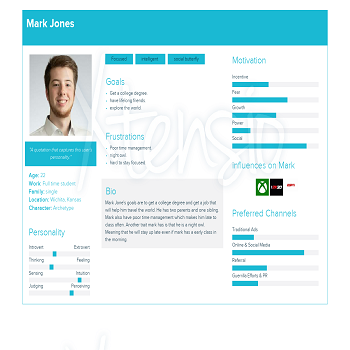
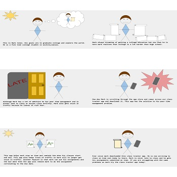
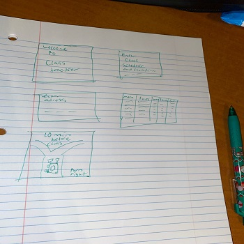
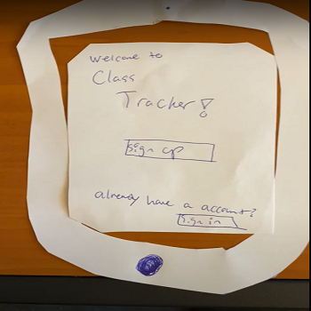
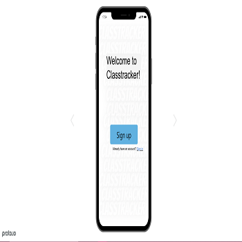

Problem Statement: Class Tracker App

It’s widely known that students struggle with arriving to class on time. Whether it is traffic or sleeping in, students are still late to class. Our solution for this is to create a class tracker app that will calculate what time the student needs to leave in order to be on time. The app will also show how much class time you have left when you are in the classroom.
Affinity Diagram: Class Tracker App

We have brainstormed some of the features for our new app! This is a sneak peek at some of the features this app will include! This app will send Reminders to you with the remaining time of the class. Also, another feature is the Time To Leave alarms that sync with traffic! Another feature is that you will be able to input your assignments and due dates to keep you informed on your currrent assignments and more! Another bonus feature is the point system! You will earn points/rewards everytime you arrive to class on time.
Personna: 4 personnas for Class Tracker App
These personnas are the typical users of this app.
Storyboard: Mark Jones
Comic strip showing the need for our class tracker app!
Sketches for our Class Tracker App
Mulitple potential sketchs for our class tracker app!!
Paper Prototype for our Class Tracker App
Functional prototype on paper which we can use to ideate.
Usability Testing Script:Class Tracker App

Scenarios and Tasks for our class tracker app!!
Low-fi Protoype: Class Tracker App

Scenarios and Tasks for our class tracker app!!
Hi-fi Protoype: Class Tracker App
Scenarios and Tasks for our class tracker app!!